Text Editor
Contents
Text Editor#
Any text editor, like Notepad, TextEdit, Notepad++, etc., can be used to write C/C++ code for the microcontroller. However, this book uses VSCode (Visual Studio Code), which has a great deal of extra functionalities that makes writing the code easier. These functionalities include syntax highlighting, suggestions, Auto-Complete, and many more. It also interfaces with CMake so that the code can be compiled into a binary with a single click. Following are the steps to setting up VSCode properly.
Windows/Linux#
Download the installer for VSCode from https://code.visualstudio.com/download for your operating system and run it.
Follow the steps shown below. Make sure to tick ‘Open with VSCode’


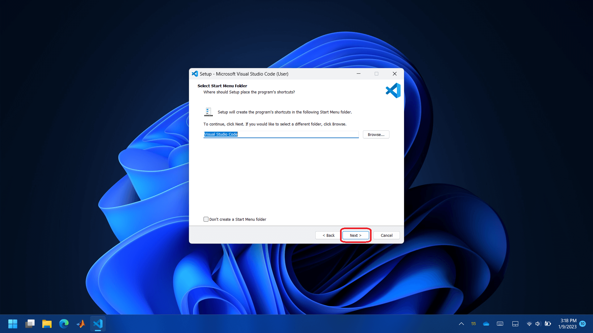
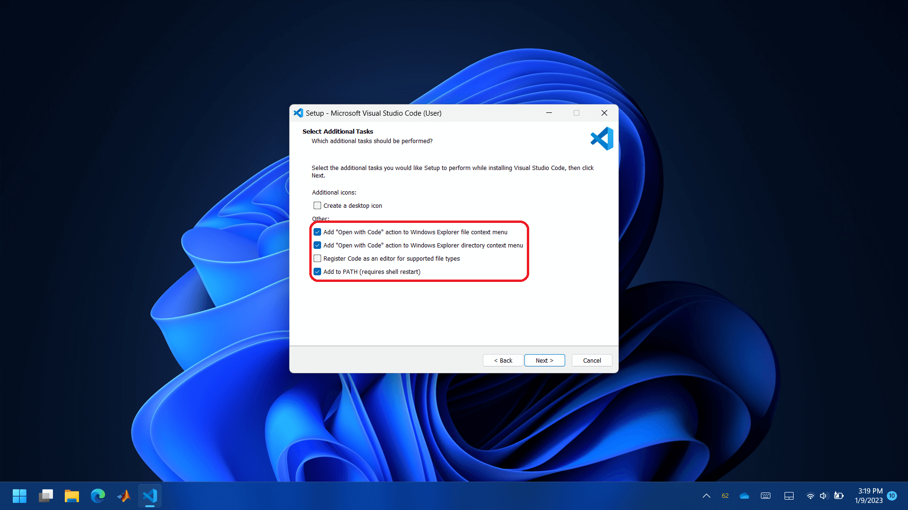


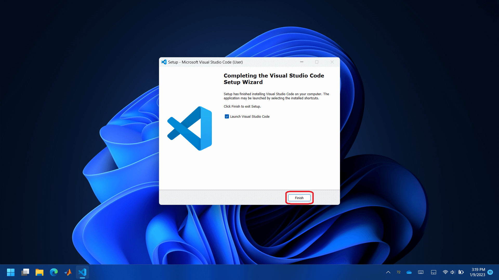
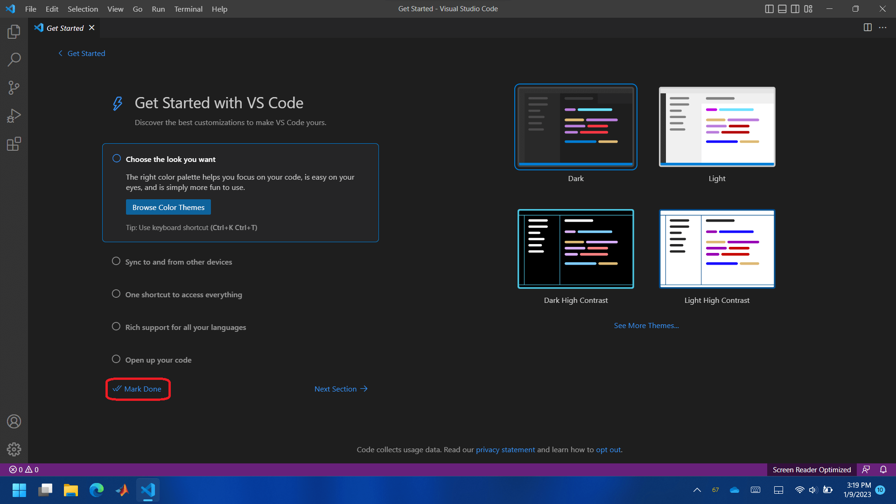
Install `WSL’ extensions.


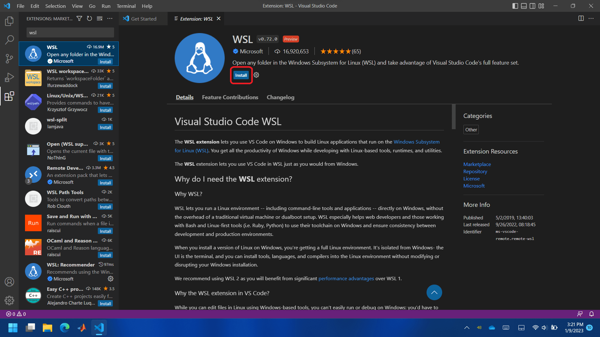

Install ‘C/C++ Extension Pack’ in WSL.
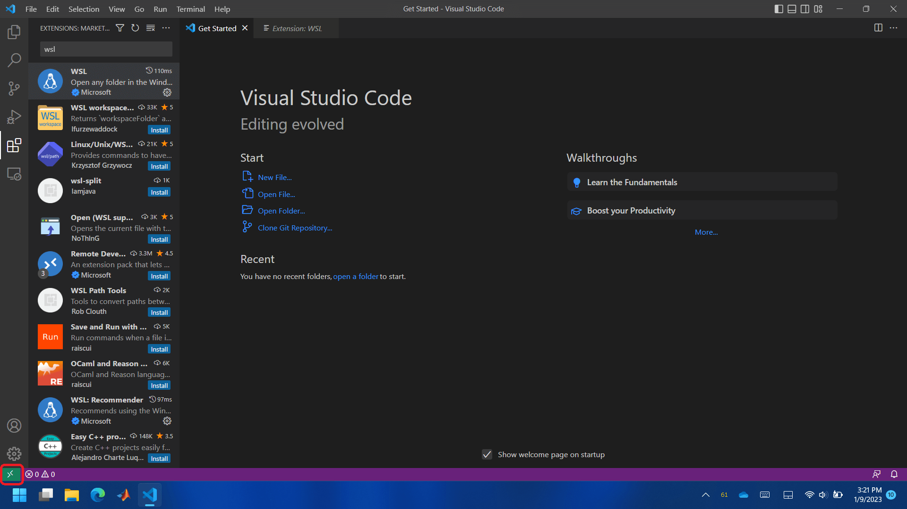


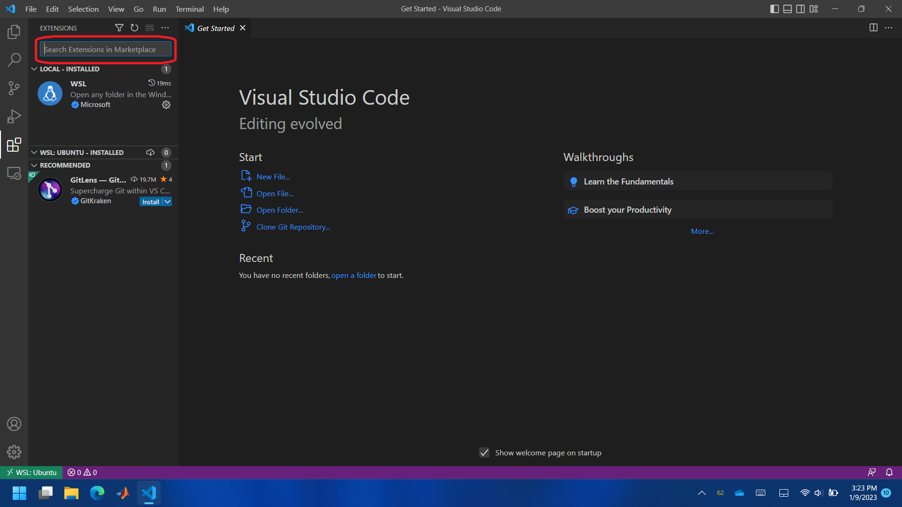
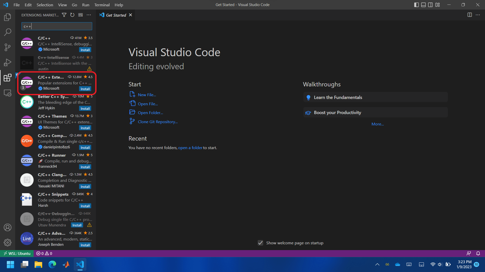
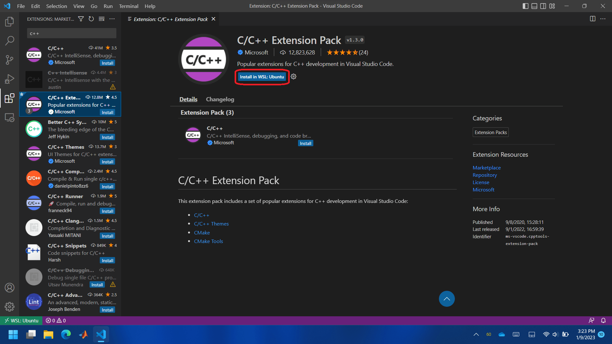

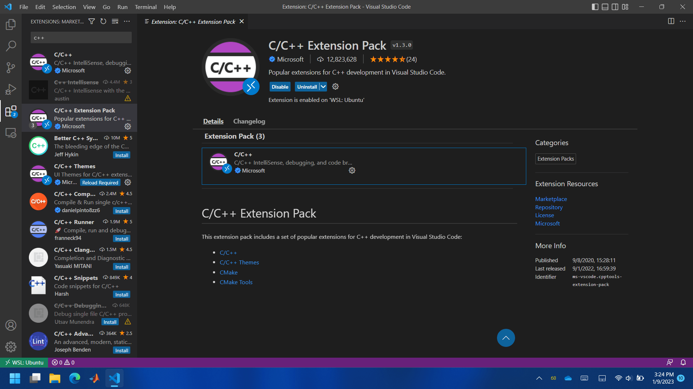
MacOS#
Download the installer for VSCode from https://code.visualstudio.com/download and install it.

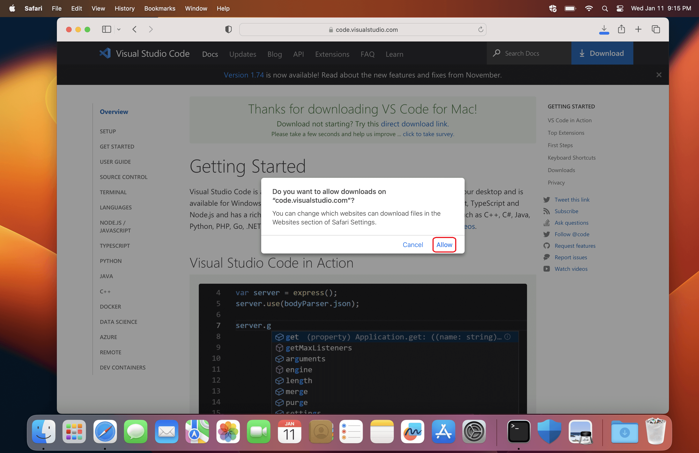
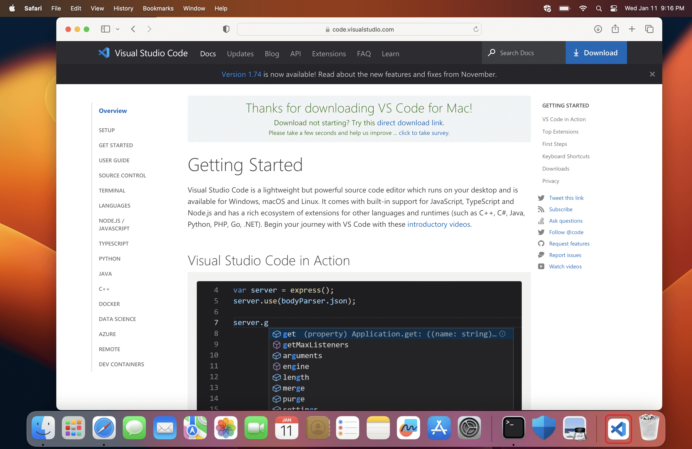

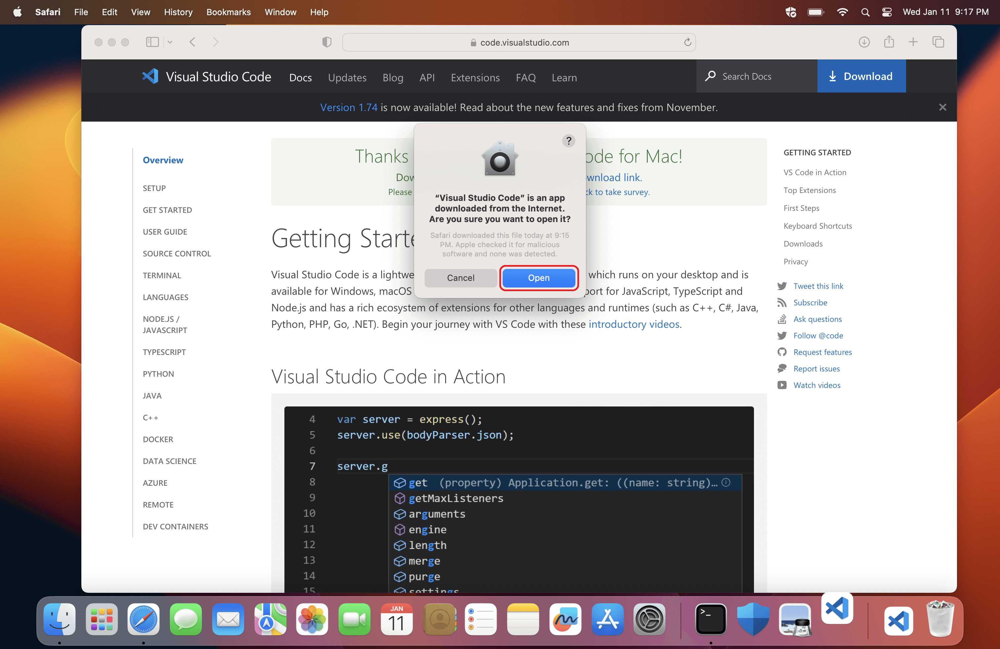

Install ‘C/C++ Extension Pack’ in WSL.


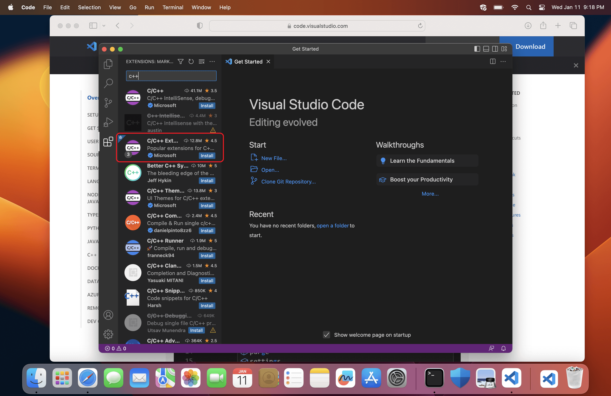